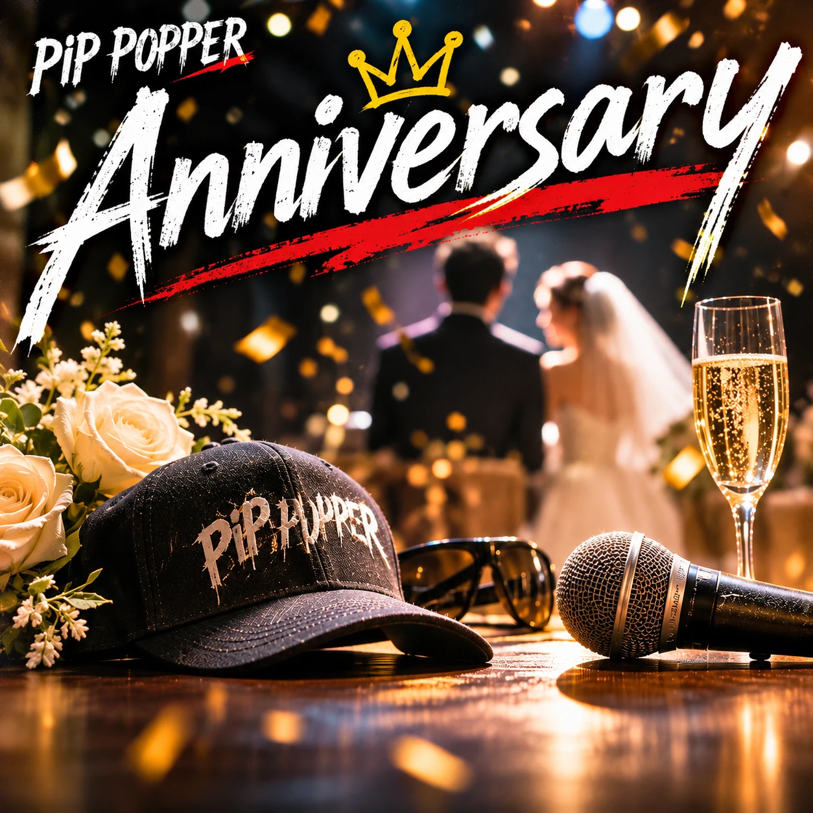

Anniversary
PIP POPPER
AIの感想
仲間の結婚を祝うために、二人のメンバーが交互に言葉をつないで贈った一曲。昔からの悪友だからこそ言える遠慮のない冗談と、面と向かっては伝えにくい本気の祝福が入り交じる。ふざけた言葉の奥にある友情が、まっすぐなサビで顔を出す。PIP POPPERらしい、少し照れくさくて温かいウェディングソング。
歌詞
妄想名人の結婚のイメージ おまえが出した結論 「それはもちろん 裸にエプロンだろ」 とか言ってたお前が 愛を語る？ どうしたんだOh! My God! おかしな話だ！想像つかねぇ大黒柱？ 今までいろいろあったしな もう冗談は無しな 何度も何度も立ち止まり 頭悪ぃから遠回りしたけど ようやく決心したところなら 無くしていこうか下心 泣かしちゃいかんぞその伴侶 立派に準備完了した 姿にちょっと感動する披露宴会場 不安な感情を排除して最上級の「大丈夫」で 結ばれる男女 新しい夫婦の誕生 hold a celebration ! Go これからはそのひとりを 君が選んだひとりだけを 「共に生きよう」心に決めた 大事な記念日 これからも今の気持ちを ずっと大切に忘れないように 二人の距離さらに近くに 感じるためのアニバーサリー この際だから俺なりの言葉で 面と向かって言えねぇことまで 音に載せて届けよう Festive song on the Beat YEAH 飛び交う言語 真のフレンドしかホントの気持ち言ってくれんぞ おまえとの関係はありきたりの おめでとうじゃ足りねぇきっと ミラクルが来るサイクル 逃さず掴んだオマエにエール送る このサークルのMyクルーのために リサイクルせずに新曲送るぜ これから本当の意味の成人。 オマエに届け願い込めたメッセージ その人の 隣の その席に おまえに 必要な 大人の責任 これからはそのひとりを 君が選んだひとりだけを 「共に生きよう」心に決めた 大事な記念日 これからも今の気持ちを ずっと大切に忘れないように 二人の距離さらに近くに 感じるためのアニバーサリー もっと近くに家庭を持つ自覚を この日を境に再確認して もっと楽しい家族生活を もっと正しい家族計画で ENJOY LIFEにCHANGE YOUR LIFE YEAH 危険日イコール安全日にチェンジ 子作りしようぜ健全に 言われなくてもすでに開始か？ お前には関係ねぇな少子化 家族増やして新鮮な人生 抜けてたパズルもようやく完成 尻に敷かれちゃちっと世間じゃダサいが、 言い方変えれば愛妻家 人によって意見は異なるが 大切な人が妻と子となる 今までのようにやりたいことだけ やってるわけにゃいかねぇんだ 目の前の壁乗り越えた向こうの幸福感を 掴んで深く感動 誕生日よりも成人の日より忘れられねぇ大事な記念日 ※これからはそのひとりを 君が選んだひとりだけを 「共に生きよう」心に決めた 大事な記念日 これからも今の気持ちを ずっと大切に忘れないように 二人の距離さらに近くに 感じるためのアニバーサリー sing along one more time go ※これからはそのひとりを 君が選んだひとりだけを 「共に生きよう」心に決めた 大事な記念日 これからも今の気持ちを ずっと大切に忘れないように 二人の距離さらに近くに 感じるためのアニバーサリー
制作背景
PIP POPPERのメンバー二人が、結婚するもう一人のメンバーに贈った楽曲。二人が交互にラップを担当し、昔からの仲間ならではの冗談やからかいを交えながら、結婚への祝福と友情を伝えている。